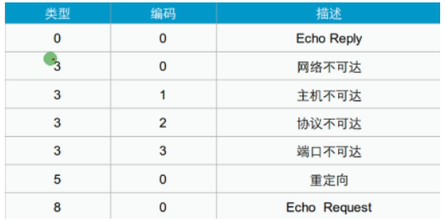
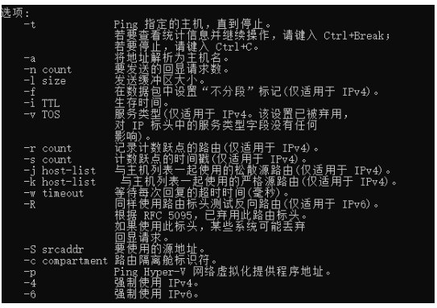

ICMP：Internet control massage protocol 因特网控制协议：用于测试网络可达性、使用ping、tracert等命令调用

ICMP的格式：
ICMP的类型：
- echo request 回响请求
- echo reply 回响应答
Type 类型和 Code 代码的组合： 
| 命令 | 备注 |
|---|---|
| Ping | 测试网络连通性 |
| tracert | 显示经过的路径 |
Ping 参数： 
tracert参数：

Ping 常见问题：
| 成功 | 对方成功回响 |
|---|---|
| 超时 | 对方主机不在线、屏蔽 （不在线-有对方MAC地址缓存，对方可能关机，平并-对方开启了策略“如防火墙”） |
| 传输失败 | 物理链路/网卡问题，网关未指定 |
| 无法访问 | 未获取到MAC地址，导致无法进行ICMP封装 |